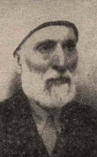

Mustafa Sabri Efendi (1869-1954)

Son dönem Ýslâm alimlerindendir. Osmanlý þeyhülislamlarýnýn yüz yirmi yedincisidir. Ýttihat ve Terakki Cemiyetine muhalif olup, Beyanü'l-Hak dergisinde baþ yazarlýk yaptý. Çok zor bir dönemde Þeyhülislamlýk yaptý. 1922 yýlýndan sonra Kahire'ye giderek yerleþti ve Camiü'l Ezher'de müderrislik yaptý. Bediüzzaman ile samimi dostluklarý olup, Risale-i Nur'un Ezher'de okunup yayýlmasýna yardýmcý oldu.Mustafa Sabri Efendi, 1869 yýlýnda Tokat'ta doðdu. Ýlk eðitimini memleketinde yaptýktan sonra Kayseri'ye giderek medrese eðitimi aldý. Buradan Ýstanbul'a geçti. Padiþahýn ders hocalarýndan olan Asým Efendi'den ilim tahsil ederek medrese eðitimini tamamladý. Yirmi iki yaþýnda Fatih Camiinde ders vermeye baþladý. Çok sayýda talebe yetiþtirdi. Bir ara Sultan Abdülhamid'in kitapçýlýðý görevinde de bulundu. Bu dönemlerde çeþitli niþan ve rütbeler aldý.
1908 yýlýnda Tokat Mebusu olarak meclise girdi. Cemiyet-i Ýlmiye-i Ýslâmiye'nin yayýn organý olan "Beyanü'l-Hak" adlý derginin baþyazarlýðýný yaptý. Ýkinci Meþrutiyetin ilanýndaki katký ve çabalarýndan dolayý Ýttihat ve Terakki Cemiyeti ile orduya teþekkür yazýlarýný kaleme aldý. Ancak, istibdada karþý yola çýkan yeni idarenin eski dönemi aratmasý ve muhalefete hayat hakký tanýmamasý üzerine muhalifler safýnda yer aldý. Önce Ahali Fýrkasý ve daha sonra Hürriyet ve Ýtilaf Fýrkasý'nýn kurucularý arasýnda yer aldý.
1913 Bab-ý Âli baskýný, giderek sertleþen iktidarýn tutumu ve aldýðý tehditler üzerine önce Mýsýr'a, oradan da Romanya'ya gitti. Birinci Dünya Savaþý sýrasýnda Osmanlý ordusunun Romanya'ya girmesi üzerine Bursa'ya gönderilerek mecburi ikamete tabi tutuldu. 1918 yýlýnda tekrar siyasi hayatýn içine girdi. Ayný yýl Darü'l-Hikmeti'l-Ýslâmiye azalýðýna seçildi. Bir yýl sonra Þeyhülislam oldu. Kýsa bir süre sonra bu görevden ayrýldýysa da 1920 yýlýnda tekrar bu göreve atandý. Ancak, kabine üyeleriyle anlaþamadýðýndan bu görevi de kýsa süreli oldu ve istifa etti. Ayný yýl teþkil edilen "Mutedil Hürriyet ve Ýtilaf Fýrkasý" kurucularý arasýnda yer aldý. (Sadýk Albayrak, Son Devrin Ýslâm Akademisi Dar-ül Hikmet-il Ýslâmiye, Yeni Asya Y., 2. Baský, Ýstanbul 1973, s. 179)
Damat Ferit Paþa kabinesinde yer almasý, Kuva-yý Milliyecilere karþý tutumu gibi sebeplerden dolayý tekrar yurttan ayrýlmak zorunda kaldý (1922). Önce Romanya'ya giderek Þehzade Nizamettin Efendi'nin yanýnda bulundu. 150'likler listesinde yer aldýðý için artýk dönmesi mümkün deðildi. Bir süre oðlu ile birlikte Yunanistan'da "Yarýn" gazetesini çýkardý. Bazý eserlerini tefrika olarak gazetesinde neþretti. Daha sonra Hicaz'a ve oradan da Mýsýr'a giderek Kahire'ye yerleþti. Ezher Üniversitesinde müderrislik yaptý. 1954 yýlýnda burada vefat etti.
Son Osmanlý ulemasýndan olup, önemli fikir ve din alimi olan Mustafa Sabri, özellikle Ýslâm'a yöneltilen haksýz ithamlar karþýsýnda fikirlerini beyan ederek karþý çýktý. Bununla beraber bazý din adamlarý ile de fikri ayrýlýða girdi. Mevkifü'l-Akl ve'l-Ýlm adlý eserinde Muhammed Abduh ve Cemaleddin Efgani hakkýnda çok sert eleþtirilerde bulundu. Söz konusu þahýslarýn Ezher'i karýþtýrdýklarýný, adým adým dinsizlere yaklaþarak zararlý geliþmelere sebep olduklarýný sert bir þekilde ifade etti. (Yeni Rehber Ansiklopedisi, "Mustafa Sabri Efendi", Türkiye G.Y., 15. C., s. 29)
Bediüzzaman Hazretleri, bir soru üzerine Mustafa Sabri Efendi ve Musa Carullah (Risale-i Nur'da Musa Bekuf olarak geçmektedir) ile ilgili izahlarda bulunmaktadýr. Birincisi muhafazakâr, diðeri reformist olarak adlandýrýlan bu þahýslar hakkýnda; "Birisi ifrat etmiþ, diðeri tefrit ediyor" deðerlendirmesinde bulunmaktadýr. Bediüzzaman'a göre; Mustafa Sabri Efendi görüþlerinde Musa Carullah'a göre haklý olmakla beraber, "Muhyiddin gibi ulûm-u Ýslâmiyenin bir mucizesi bulunan bir zâtý tezyifte haksýzdýr... Mûsâ Bekûf ise, ziyade teceddüde taraftar ve asrîliðe mümâþâtkâr efkârýyla çok yanlýþ gidiyor. Bazý hakaik-i Ýslâmiyeyi yanlýþ tevillerle tahrif ediyor. Ebu'l-Âlâ-yý Maarrî gibi merdut bir adamý muhakkikînlerin fevkinde tuttuðundan ve kendi efkârýna uygun gelen Muhyiddin'in Ehl-i Sünnete muhalefet eden meselelerine ziyade taraftarlýðýndan, ziyade ifrat ediyor." (Lem'alar, s. 272, 273)
Hüseyin Cahit Yalçýn saldýrgan bir ifade ile; Arap kültürüne ihtiyacýn olmadýðýný açýkça ifade ettiðinde, dini duyarlýlýðý olanlarýn tepkisine yol açtý. Gerek o zaman gerekse sonraki dönemlerde "Arap kültürü" maskesi kullanýlarak dini deðerlere saldýrýlar yapýldý. Ýslâm'a açýktan saldýrma yerine Arap kültürü ifadelerinin kullanýlmasý tercih edildi. Yalçýn'a karþý en sert tepkiyi gösterenlerden birisi de Mustafa Sabri Efendi oldu. Yazýlarýyla Ýslâmiyet'in üstün bir kültüre sahip olduðunu dile getirdi. Müslümanlarý harekete geçmeye çaðýrdý. (Þerif Mardin, Bediüzzaman Said Nursi Olayý, Ýletiþim Y., Ýstanbul 1992, s. 221-226)
Mustafa Sabri Efendi, Kahire'de bulunduðu sýralarda hem Bediüzzaman hem de Risale-i Nur ile alakasýný kesmedi. Ezher Üniversitesinde Nurlara özel önem verdi, okunmasýna katkýda bulundu. (Sözler, s. 713) Bediüzzaman, "Dârü'l-Hikmet'te benim arkadaþým" dediði Mustafa Sabri Efendi'ye verilmek üzere Camiü'l-Ezher'e "hediye-i vakfiye... olarak on bir tane hususî mecmualarý[ný]..." gönderdiðini belirtmektedir. Ýslâm'ýn büyük medresesinin o sýralarda yirmi yedi bin öðrencisinin olduðu belirtilmektedir. (Emirdað Lahikasý, s. 301) Böylece Nurlardan çok sayýda kiþinin istifadesi saðlanmýþtýr.
Bazý hatýralarda, Risale-i Nur Külliyatý içinde neþredilmek üzere Mustafa Sabri Efendi'nin bir eserini gönderdiði nakledilmektedir. Eseri getiren þahýslara Bediüzzaman'ýn, böyle bir þeye müsaadenin olmadýðýný, eserde ihtilaflý konularýn bulunduðunu, Nurlarýn ittifaký esas aldýðýný belirterek selamýný götürmelerini istediði belirtilmektedir (Necmeddin Þahiner, Son Þahitler, 3. C., s. 118-119). Ezher'de okuyanlardan Hacý Ali Kýlýçalp, Mustafa Sabri Efendi'nin aracýlýðýyla Bediüzzaman tarafýndan üniversiteye hediye edilen Külliyatýn kütüphaneye teslim edildiðini ve teslime dair resmi bir belgenin kendisine verildiðini nakletmektedir. (Þahiner, 3. C., s. 133)
Bediüzzaman ile aralarýnda samimi bir dostluk olmakla birlikte temel bazý fikir ayrýlýklarý da mevcuttur. Muhyiddin-i Arabi konusunda farklý yaklaþýmlarýnýn yanýnda baþka görüþ ayrýlýklarý da olmuþtur. Mesela, Mustafa Sabri Efendi Kuva-yý Milliye hareketine karþý olmasýna raðmen Bediüzzaman, Kuva-yý Milliye hareketinden yana tavýr koydu ve esaret altýndaki Ýstanbul'da Þeyhülislamlýk tarafýndan verilen menfi yöndeki fetvaya karþý çýktý.
Mustafa Sabri Efendi, Bediüzzaman'ýn çok sayýda talebesi olmasýna raðmen neden cihat için harekete geçmediðini, Ezher'de okuyan talebeler aracýðýyla sordu. Bediüzzaman, en büyük cihadýn iman dâvâsý olduðunu, en önemli meselenin imaný kurtarmak olduðunu, dahilde müspet hareket ederek asayiþe zarar verilmemesinin ehemmiyetine iþaret ederek cevap verdi. "... bilhassa Müslümanlarýn baþýna öyle bir hadise ve öyle bir dâvâ açýlmýþ ki, her adam, eðer Alman ve Ýngiliz kadar kuvveti ve serveti olsa ve aklý da varsa, o tek dâvâyý kazanmak için, bilatereddüt sarf edecek." O dâvâ da imaný kazanma veya kaybetme dâvâsýdýr (Asa-yý Musa, s. 20-21). Prof. Dr. Ali Özek, Bediüzzaman'ýn imanýn ehemmiyeti hakkýnda uzun bir izahatta bulunduðunu ve söylediklerini daha sonra Mustafa Sabri Efendi'ye aktardýðýný belirtmektedir.
Mustafa Sabri Efendi, Bediüzzaman ve söyledikleri hakkýnda; "...Said Efendi gerçekten haklýdýr! Evet söyledikleri doðrudur. O dâvâsýnda muvaffak oldu. Biz hata ettik. O memleketten hiçbir yere ayrýlmadý, sebat etti..." ifadeleriyle Bediüzzaman'ý tasvip ve takdir ettiðini belirtti. (Þahiner, Son Þahitler, 4. C., s. 442)
Mustafa Sabri Efendi; "Yeni Ýslâm Müçtehidlerinin Kýymet-i Ýlmiyesi" adlý eserinde Musa Carullah'ýn fikirlerini tenkit etti. "Savm-ý Ramazan" adlý eserinde, orucu fidye ile geçiþtirmeye çalýþanlarý eleþtirdi. Gerek Türkiye'de gerekse Mýsýr'da benzeri tartýþmalarla namazda surelerin tercümelerinin okunmasý þeklindeki görüþlere karþý, "Mesele-i Tercemetü'l-Kur'ân" adlý eseri kaleme aldý. Beyanü'l-Hak ve Yarýn gazetesi dýþýnda Malumat, Yani Gazete, Tasisat, Alemdar, Ýkdam gibi muhtelif yayýn organlarýnda çok sayýda makalesi yayýnlandý.